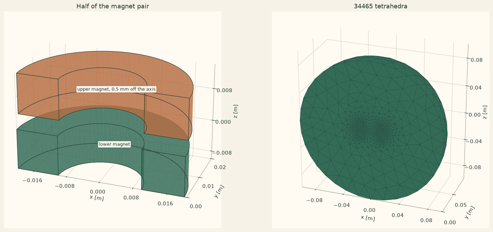

Docs › Examples › Magnetic stiffness of an axial permanent-magnet bearing
Magnetostatics · 3D
Magnetic stiffness of an axial permanent-magnet bearing
Two repelling ring magnets form a passive axial bearing; its axial and radial stiffness follow from the forces when the upper magnet is moved.
Run locally with OneSimulation. The example downloads are free. Running them requires an activated runtime. Runtime Alpha 0.2.1a7 · CPython 3.13 on macOS (Apple Silicon), Ubuntu 22.04 (x86-64), and Windows x64. Installation and activation · View pilot plans. Scope of the reference checks.

What it computes
OneSimulation solves the 3D vector potential of the two permanent magnets with second-order Nedelec edge elements on one half of the air read from STEP, for the upper magnet moved up, down and sideways, with GMRES and the auxiliary-space preconditioner for edge elements. The force on the upper magnet is the Maxwell stress integrated over the air layer around it; the stiffnesses follow by finite differences. The script that builds the STEP files comes with the notebook.
What it checks
The axial forces match the exact force from the equivalent surface currents and Maxwell's mutual inductance within 0.01 % at 3.5 mm and 0.32 % at 4.5 mm, the off-axis force within 0.03 %; the axial stiffness is within 1.4 % of the derivative of the exact force, and the radial stiffness agrees with Earnshaw's -k_z/2 within 0.5 %.
Geometry
The notebook starts at the import of the CAD files axial_bearing_magnetic_stiffness.step, axial_bearing_magnetic_stiffness_lower.step, axial_bearing_magnetic_stiffness_upper_down.step, axial_bearing_magnetic_stiffness_upper_side.step, axial_bearing_magnetic_stiffness_upper_up.step: STEP (AP242), readable by any CAD program, with the names of the faces that the boundary conditions use. Put them next to the notebook.


The geometry script
The script axial_bearing_magnetic_stiffness_geometry.py builds the geometry with the CAD objects of OneSimulation and writes the files. Change a dimension there, run it, and run the notebook again.
"""Geometry of the OneSimulation example "Magnetic stiffness of an axial permanent-magnet bearing".
Builds one half of the air around a pair of ring magnets with the CAD objects of OneSimulation: a
half ball of 100 mm radius on the side y > 0, cut by the plane y = 0 (face group plane; the ball
surface is outer), written to axial_bearing_magnetic_stiffness.step. The half of the lower, fixed
ring magnet (inner radius 10 mm, outer radius 20 mm, 10 mm high, top face at z = 0) goes to
axial_bearing_magnetic_stiffness_lower.step. The upper ring is written for three positions about
the 4 mm gap: 0.5 mm lower (..._upper_down.step), 0.5 mm higher (..._upper_up.step) and 0.5 mm off
the axis in x (..._upper_side.step).
"""
from onesim.cad.d3 import AnnularCylinder, Box, Sphere
mm = 1e-3
air, inner, outer, height, gap, shift = (
100 * mm,
10 * mm,
20 * mm,
10 * mm,
4 * mm,
0.5 * mm,
)
half = Box(length=2 * air, width=air, height=2 * air, origin=(-air, 0.0, -air)).named(
"cut"
)
region = Sphere(radius=air).named("ball") & half
faces = region.boundaries
region.grouped(
plane=faces["cut.y_min"],
outer=region.select(faces=lambda face: face.id.startswith("ball")),
).save("axial_bearing_magnetic_stiffness.step")
ring = (
lambda x, z: AnnularCylinder(
inner_radius=inner, outer_radius=outer, length=height, origin=(x, 0.0, z)
)
& half
)
ring(0.0, -height).save("axial_bearing_magnetic_stiffness_lower.step")
for name, (x, z) in {
"down": (0.0, gap - shift),
"up": (0.0, gap + shift),
"side": (shift, gap),
}.items():
ring(x, z).save(f"axial_bearing_magnetic_stiffness_upper_{name}.step")The notebook
The complete notebook, cell by cell. Run it to produce the figures and the comparison printout.
Two NdFeB ring magnets (inner radius 10 mm, outer radius 20 mm, 10 mm high, \(B_r=1.2\) T) face each other with like poles across a nominal gap of \(g=4\) mm. The repulsive force \(F_z(g)\) falls as the gap opens, so the bearing is stable along the axis with the stiffness
and the radial stiffness \(k_x\) follows from the sideways force when the upper ring is moved by \(\delta=0.5\) mm off the axis. The field of the rigid magnets (\(\mathbf B=\mu_0(\mathbf H+\mathbf M)\)) solves \(\nabla\times(\mu_0^{-1}\nabla\times\mathbf A)=\nabla\times\mathbf M\), and each force is the Maxwell stress integrated over the air around the upper magnet.
The sideways shift breaks the rotational symmetry, so one half of the air (a half ball of 100 mm radius on the side \(y>0\)) is computed. It comes from the CAD file axial_bearing_magnetic_stiffness.step (face groups plane, outer), the lower magnet from ..._lower.step and the upper magnet in the three positions from ..._upper_down.step, ..._upper_up.step and ..._upper_side.step. The script axial_bearing_magnetic_stiffness_geometry.py builds them with the CAD objects of OneSimulation.
| face | condition |
|---|---|
plane (\(y=0\)), outer | \(\mathbf n\times\mathbf A=0\) |
Reference. The exact axial force follows from the equivalent surface currents \(\pm M\) of the rings and Maxwell's mutual inductance of coaxial loops (Furlani, Permanent Magnet and Electromechanical Devices, Ch. 3); its derivative gives \(k_z\). For magnets with \(\mu_r=1\) the force field is free of divergence, so the three stiffnesses add up to zero (Earnshaw's theorem, Earnshaw 1842; Braunbek 1939): by symmetry \(k_x=-k_z/2\).
import numpy as np
from onesim.cad.d2 import Plane
from onesim.cad.exchange import load
from onesim.materials import VacuumPermeability
from onesim.meshing import LocalRefinement, TetrahedralMesher
from onesim.numerics import Numerics
from onesim.numerics.fem import FiniteElement, Nedelec
from onesim.numerics.linear import GMRES, AuxiliarySpaceMaxwell
from onesim.physics.magnetostatics import (
CoulombGauge,
MagneticInsulation,
MagneticVectorPotential,
Magnetostatics,
PermanentMagnet,
magnetic_force,
)
from onesim.simulation import Problem, Simulation
from onesim.visualization import plots, theme
from scipy.special import ellipe, ellipk
theme.set()Geometry and mesh
Both magnets are embedded in the mesh with 2 mm cells; the gap between them and its surroundings, where the force is taken from the field, get 1.5 mm cells, and the cells grow towards the outer boundary.
air, lower = load("axial_bearing_magnetic_stiffness.step"), load(
"axial_bearing_magnetic_stiffness_lower.step"
)
faces = air.boundaries
positions = {"down": (0.0, 0.0035), "up": (0.0, 0.0045), "side": (0.0005, 0.004)}
uppers = {
name: load(f"axial_bearing_magnetic_stiffness_upper_{name}.step")
for name in positions
}
outer, height = lower.size[0] / 2, lower.size[2]
inner = min(np.hypot(*vertex.position[:2]) for vertex in lower.vertices)
meshes = {
name: TetrahedralMesher(
target_size=0.02,
embedded_regions=(lower, uppers[name]),
refinements=(
LocalRefinement(region=lower, target_size=0.002),
LocalRefinement(region=uppers[name], target_size=0.002),
),
size_field=lambda points: np.clip(
0.0015
+ 0.5
* np.hypot(
np.maximum(
np.abs(np.hypot(points[:, 0], points[:, 1]) - 0.015) - 0.007, 0
),
np.maximum(np.abs(points[:, 2] - 0.002) - 0.004, 0),
),
0.0015,
0.02,
),
).generate(air)
for name in positions
}
view = plots.Camera(elevation=25, azimuth=-70)
fig = plots.figure(1, 2, size=(14, 6))
plots.geometry(
[
lower.named("lower magnet"),
uppers["side"].named("upper magnet, 0.5 mm off the axis"),
],
camera=view,
title="Half of the magnet pair",
ax=fig[0],
)
plots.mesh(
meshes["side"],
groups=("all",),
legend=False,
camera=view,
title=f"{meshes['side'].cell_count} tetrahedra",
ax=fig[1],
)
plots.show()Model
The remanence is \(+B_r\hat{\mathbf z}\) in the lower and \(-B_r\hat{\mathbf z}\) in the upper ring (PermanentMagnet on the embedded region of each ring, so the magnetisation follows the cells of the magnet).
mu0 = float(VacuumPermeability().evaluate())
models = {
name: Magnetostatics(
domain=air.volume,
permeability=VacuumPermeability(),
formulation=MagneticVectorPotential(gauge=CoulombGauge()),
magnets=(
PermanentMagnet(region=lower, remanence=(0.0, 0.0, 1.2)),
PermanentMagnet(region=uppers[name], remanence=(0.0, 0.0, -1.2)),
),
)
for name in positions
}
numerics = Numerics(
spatial=FiniteElement(element=Nedelec(order=2)),
linear_solver=GMRES(preconditioner=AuxiliarySpaceMaxwell()),
)
results = {
name: Simulation(
problem=Problem(
name="Bearing stiffness",
geometry=air,
physics=(model,),
boundary_conditions=(
MagneticInsulation(boundary=faces.plane | faces.outer, physics=model),
),
),
mesh=meshes[name],
numerics=numerics,
).solve_stationary()
for name, model in models.items()
}
fields = {
name: results[name].field(model.magnetic_flux_density)
for name, model in models.items()
}Results
The force on the upper magnet is the Maxwell stress \(\mathbf T=\mathbf H\mathbf B-\frac12(\mathbf H\cdot\mathbf B)\mathbf I\) integrated with a cut-off function that is one on the magnet and falls to zero over the layer of air cells around it, \(\mathbf F=-\int\mathbf T\,\nabla\chi\,dV\) (magnetic_force); this volume form is far less sensitive to the mesh than a stress integral over one cut plane. The half model gives half of \(F_z\) and \(F_x\).
forces = {
name: 2 * magnetic_force(results[name], model, uppers[name]).force
for name, model in models.items()
}
axial, radial = {name: force[2] for name, force in forces.items()}, {
name: force[0] for name, force in forces.items()
}
plane = Plane(origin=(0, 0, 0.0017), normal=(0, 0, 1))
nodes, weights = np.polynomial.legendre.leggauss(48)
pair = np.outer(weights, weights) * (height / 2) ** 2
mutual = lambda a, b, z: (
lambda k: mu0
* np.sqrt(a * b)
* ((2 / k - k) * ellipk(k * k) - 2 / k * ellipe(k * k))
)(np.sqrt(4 * a * b / ((a + b) ** 2 + z**2)))
separation = (
lambda g: (g + height / 2 + height / 2 * nodes)[None, :]
- (-height / 2 + height / 2 * nodes)[:, None]
)
exact = lambda g: sum(
s1
* s2
* (1.2 / mu0) ** 2
* np.sum(
pair
* (mutual(a, b, separation(g) + 1e-8) - mutual(a, b, separation(g) - 1e-8))
/ 2e-8
)
for a, s1 in ((outer, 1), (inner, -1))
for b, s2 in ((outer, -1), (inner, 1))
)
axial_stiffness = -(axial["up"] - axial["down"]) / 0.001
exact_stiffness = -(exact(0.0045) - exact(0.0035)) / 0.001
radial_stiffness = -radial["side"] / 0.0005
print("position F_z [N] exact F_z [N] F_x [N]")
for name, (x0, z0) in positions.items():
print(
f"x0 = {1e3 * x0:.1f} mm, g = {1e3 * z0:.1f} mm {axial[name]:10.3f} {exact(z0):14.3f} {radial[name]:10.3f}"
)
print(
f"axial stiffness k_z = {axial_stiffness / 1e3:.3f} N/mm, from the exact force {exact_stiffness / 1e3:.3f} N/mm "
f"({100 * (axial_stiffness / exact_stiffness - 1):+.2f} %)"
)
print(
f"radial stiffness k_x = {radial_stiffness / 1e3:.3f} N/mm, Earnshaw -k_z/2 = {-exact_stiffness / 2e3:.3f} N/mm "
f"({100 * (radial_stiffness / (-exact_stiffness / 2) - 1):+.2f} %)"
)
print(
f"sum k_z + 2 k_x = {(axial_stiffness + 2 * radial_stiffness) / 1e3:+.3f} N/mm ({100 * (axial_stiffness + 2 * radial_stiffness) / axial_stiffness:+.2f} % of k_z)"
)Figure
The induction in the plane through the shifted magnet, the sideways stress on a plane in the gap that pushes it further out, and the force against the gap with the stiffness as the slope.
wide = np.linspace(0.002, 0.008, 100)
fig = plots.figure(1, 3, size=(22, 5.5))
plots.section(
fields["side"],
plane=Plane(origin=(0, 1e-6, 0), normal=(0, 1, 0)),
component=lambda B, p: np.linalg.norm(B, axis=1),
limits=(0, 0.9),
contours=10,
subdivisions=2,
label="|B| [T]",
xlimits=(-0.035, 0.035),
ylimits=(-0.02, 0.025),
xlabel="x [m]",
ylabel="z [m]",
title="Induction, upper ring 0.5 mm off the axis",
ax=fig[0],
)
plots.section(
fields["side"],
plane=plane,
component=lambda B, p: -B[:, 0] * B[:, 2] / mu0 / 1e3,
colormap="diverging",
contours=10,
subdivisions=2,
symmetry={"planes": [((0, 1, 0), (0, 0, 0))]},
label="-B_x B_z / µ0 [kPa]",
xlimits=(-0.03, 0.03),
ylimits=(-0.03, 0.03),
xlabel="x [m]",
ylabel="y [m]",
title="Sideways stress on the plane z = 1.7 mm",
ax=fig[1],
)
plots.line(
1e3 * wide,
{
"exact force": [exact(g) for g in wide],
"slope -k_z from the simulation": axial["down"]
- axial_stiffness * (wide - 0.0035),
},
points={"simulation": ([3.5, 4.5], [axial["down"], axial["up"]])},
ylimits=(0, 1.3 * exact(0.002)),
xlabel="air gap [mm]",
ylabel="repulsive force [N]",
title="Force and axial stiffness",
ax=fig[2],
)
plots.show()Going further
Nest a third ring to stiffen the bearing, add an active coil that holds the unstable radial direction, or replace the step in axial_bearing_magnetic_stiffness_geometry.py by several offsets and fit the force curve.